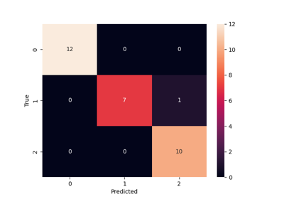

ICRRandomForestClassifier#
- class icrlearn.ICRRandomForestClassifier(n_estimators=100, *, criterion='gini', max_depth=None, min_samples_split=2, min_samples_leaf=1, min_weight_fraction_leaf=0.0, max_features='sqrt', max_leaf_nodes=None, min_impurity_decrease=0.0, bootstrap=True, oob_score=False, n_jobs=None, random_state=None, verbose=0, warm_start=False, class_weight=None, ccp_alpha=0.0, max_samples=None, monotonic_cst=None, rarity_measure='cb_loop', rarity_adjustment_method='bootstrap_sampling')#
A RF classifier that uses intra-class rarity. Based on scikit-learn’s RandomForestClassifier.
- Parameters:
- rarity_measure{“cb_loop”, “l2min”}, default=”cb_loop”
The rarity measure to be used for the rarity score calculation. Supported values are “cb_loop” to use the CB-LoOP algorithm or “l2min” to use the adapted L^2_min algorithm to calculate rarity scores.
- rarity_adjustment_method{“bootstrap_sampling”, “sample_weights”}, default=”bootstrap_sampling”
The method to bias the model towards intra-class rare samples during training. Supported values are “bootstrap_sampling” to use the rarity scores to adjust the bootstrap sampling process or “sample_weights” to use the rarity scores to weight the samples in the trees of the forest instead.
Examples
>>> from sklearn.datasets import load_iris >>> from icrlearn import ICRRandomForestClassifier >>> X, y = load_iris(return_X_y=True) >>> icr_rf = ICRRandomForestClassifier().fit(X, y) >>> icr_rf.predict(X) array([0, 0, 0, 0, 0, 0, 0, 0, 0, 0, 0, 0, 0, 0, 0, 0, 0, 0, 0, 0, 0, 0, 0, 0, 0, 0, 0, 0, 0, 0, 0, 0, 0, 0, 0, 0, 0, 0, 0, 0, 0, 0, 0, 0, 0, 0, 0, 0, 0, 0, 1, 1, 1, 1, 1, 1, 1, 1, 1, 1, 1, 1, 1, 1, 1, 1, 1, 1, 1, 1, 1, 1, 1, 1, 1, 1, 1, 2, 1, 1, 1, 1, 1, 1, 1, 1, 1, 1, 1, 1, 1, 1, 1, 1, 1, 1, 1, 1, 1, 1, 2, 2, 2, 2, 2, 2, 2, 2, 2, 2, 2, 2, 2, 2, 2, 2, 2, 2, 2, 2, 2, 2, 2, 2, 2, 2, 2, 2, 2, 2, 2, 2, 2, 2, 2, 2, 2, 2, 2, 2, 2, 2, 2, 2, 2, 2, 2, 2, 2, 2])
Methods
apply(X)Apply trees in the forest to X, return leaf indices.
calculate_rarity_scores(X, y)Calculate rarity scores for each sample in the dataset.
Return the decision path in the forest.
fit(X, y[, sample_weight])Build a forest of trees from the training set (X, y), adjusting for intra-class rarity.
Get metadata routing of this object.
get_params([deep])Get parameters for this estimator.
predict(X)Predict class for X.
Predict class log-probabilities for X.
Predict class probabilities for X.
score(X, y[, sample_weight])Return the mean accuracy on the given test data and labels.
set_fit_request(*[, sample_weight])Request metadata passed to the
fitmethod.set_params(**params)Set the parameters of this estimator.
set_score_request(*[, sample_weight])Request metadata passed to the
scoremethod.- apply(X)#
Apply trees in the forest to X, return leaf indices.
- Parameters:
- X{array-like, sparse matrix} of shape (n_samples, n_features)
The input samples. Internally, its dtype will be converted to
dtype=np.float32. If a sparse matrix is provided, it will be converted into a sparsecsr_matrix.
- Returns:
- X_leavesndarray of shape (n_samples, n_estimators)
For each datapoint x in X and for each tree in the forest, return the index of the leaf x ends up in.
- calculate_rarity_scores(X, y)#
Calculate rarity scores for each sample in the dataset.
- Parameters:
- X{array-like, sparse matrix} of shape (n_samples, n_features)
The input samples. Internally, its dtype will be converted to
dtype=np.float32. If a sparse matrix is provided, it will be converted into a sparsecsc_matrix.- yarray-like of shape (n_samples,) or (n_samples, n_outputs)
The class labels of the input samples.
- Returns:
- rarity_scoresarray-like of shape (n_samples,)
The rarity scores for each input sample.
- decision_path(X)#
Return the decision path in the forest.
Added in version 0.18.
- Parameters:
- X{array-like, sparse matrix} of shape (n_samples, n_features)
The input samples. Internally, its dtype will be converted to
dtype=np.float32. If a sparse matrix is provided, it will be converted into a sparsecsr_matrix.
- Returns:
- indicatorsparse matrix of shape (n_samples, n_nodes)
Return a node indicator matrix where non zero elements indicates that the samples goes through the nodes. The matrix is of CSR format.
- n_nodes_ptrndarray of shape (n_estimators + 1,)
The columns from indicator[n_nodes_ptr[i]:n_nodes_ptr[i+1]] gives the indicator value for the i-th estimator.
- property estimators_samples_#
The subset of drawn samples for each base estimator.
Returns a dynamically generated list of indices identifying the samples used for fitting each member of the ensemble, i.e., the in-bag samples.
Note: the list is re-created at each call to the property in order to reduce the object memory footprint by not storing the sampling data. Thus fetching the property may be slower than expected.
- property feature_importances_#
The impurity-based feature importances.
The higher, the more important the feature. The importance of a feature is computed as the (normalized) total reduction of the criterion brought by that feature. It is also known as the Gini importance.
Warning: impurity-based feature importances can be misleading for high cardinality features (many unique values). See
sklearn.inspection.permutation_importance()as an alternative.- Returns:
- feature_importances_ndarray of shape (n_features,)
The values of this array sum to 1, unless all trees are single node trees consisting of only the root node, in which case it will be an array of zeros.
- fit(X, y, sample_weight=None)#
Build a forest of trees from the training set (X, y), adjusting for intra-class rarity.
This method calculates rarity scores for the training data and uses them to adjust the sample weights or bootstrap sampling during the fitting process. If
rarity_adjustment_methodis set to “sample_weights”, the rarity scores are used to weight the samples directly. If set to “bootstrap_sampling”, the rarity scores are used to adjust the bootstrap sampling process.Widely based on the original fit method of sklearn’s RandomForestClassifier, only modified to include rarity scores for sample weighting or bootstrap sampling.
- Parameters:
- X{array-like, sparse matrix} of shape (n_samples, n_features)
The training input samples. Internally, its dtype will be converted to
dtype=np.float32. If a sparse matrix is provided, it will be converted into a sparsecsc_matrix.- yarray-like of shape (n_samples,) or (n_samples, n_outputs)
The target values (class labels in classification, real numbers in regression).
- sample_weightarray-like of shape (n_samples,), default=None
Sample weights. If None, then samples are equally weighted. Splits that would create child nodes with net zero or negative weight are ignored while searching for a split in each node. In the case of classification, splits are also ignored if they would result in any single class carrying a negative weight in either child node.
- Returns:
- selfobject
Fitted estimator.
- get_metadata_routing()#
Get metadata routing of this object.
Please check User Guide on how the routing mechanism works.
- Returns:
- routingMetadataRequest
A
MetadataRequestencapsulating routing information.
- get_params(deep=True)#
Get parameters for this estimator.
- Parameters:
- deepbool, default=True
If True, will return the parameters for this estimator and contained subobjects that are estimators.
- Returns:
- paramsdict
Parameter names mapped to their values.
- predict(X)#
Predict class for X.
The predicted class of an input sample is a vote by the trees in the forest, weighted by their probability estimates. That is, the predicted class is the one with highest mean probability estimate across the trees.
- Parameters:
- X{array-like, sparse matrix} of shape (n_samples, n_features)
The input samples. Internally, its dtype will be converted to
dtype=np.float32. If a sparse matrix is provided, it will be converted into a sparsecsr_matrix.
- Returns:
- yndarray of shape (n_samples,) or (n_samples, n_outputs)
The predicted classes.
- predict_log_proba(X)#
Predict class log-probabilities for X.
The predicted class log-probabilities of an input sample is computed as the log of the mean predicted class probabilities of the trees in the forest.
- Parameters:
- X{array-like, sparse matrix} of shape (n_samples, n_features)
The input samples. Internally, its dtype will be converted to
dtype=np.float32. If a sparse matrix is provided, it will be converted into a sparsecsr_matrix.
- Returns:
- pndarray of shape (n_samples, n_classes), or a list of such arrays
The class probabilities of the input samples. The order of the classes corresponds to that in the attribute classes_.
- predict_proba(X)#
Predict class probabilities for X.
The predicted class probabilities of an input sample are computed as the mean predicted class probabilities of the trees in the forest. The class probability of a single tree is the fraction of samples of the same class in a leaf.
- Parameters:
- X{array-like, sparse matrix} of shape (n_samples, n_features)
The input samples. Internally, its dtype will be converted to
dtype=np.float32. If a sparse matrix is provided, it will be converted into a sparsecsr_matrix.
- Returns:
- pndarray of shape (n_samples, n_classes), or a list of such arrays
The class probabilities of the input samples. The order of the classes corresponds to that in the attribute classes_.
- score(X, y, sample_weight=None)#
Return the mean accuracy on the given test data and labels.
In multi-label classification, this is the subset accuracy which is a harsh metric since you require for each sample that each label set be correctly predicted.
- Parameters:
- Xarray-like of shape (n_samples, n_features)
Test samples.
- yarray-like of shape (n_samples,) or (n_samples, n_outputs)
True labels for
X.- sample_weightarray-like of shape (n_samples,), default=None
Sample weights.
- Returns:
- scorefloat
Mean accuracy of
self.predict(X)w.r.t.y.
- set_fit_request(*, sample_weight: bool | None | str = '$UNCHANGED$') ICRRandomForestClassifier#
Request metadata passed to the
fitmethod.Note that this method is only relevant if
enable_metadata_routing=True(seesklearn.set_config()). Please see User Guide on how the routing mechanism works.The options for each parameter are:
True: metadata is requested, and passed tofitif provided. The request is ignored if metadata is not provided.False: metadata is not requested and the meta-estimator will not pass it tofit.None: metadata is not requested, and the meta-estimator will raise an error if the user provides it.str: metadata should be passed to the meta-estimator with this given alias instead of the original name.
The default (
sklearn.utils.metadata_routing.UNCHANGED) retains the existing request. This allows you to change the request for some parameters and not others.Added in version 1.3.
Note
This method is only relevant if this estimator is used as a sub-estimator of a meta-estimator, e.g. used inside a
Pipeline. Otherwise it has no effect.- Parameters:
- sample_weightstr, True, False, or None, default=sklearn.utils.metadata_routing.UNCHANGED
Metadata routing for
sample_weightparameter infit.
- Returns:
- selfobject
The updated object.
- set_params(**params)#
Set the parameters of this estimator.
The method works on simple estimators as well as on nested objects (such as
Pipeline). The latter have parameters of the form<component>__<parameter>so that it’s possible to update each component of a nested object.- Parameters:
- **paramsdict
Estimator parameters.
- Returns:
- selfestimator instance
Estimator instance.
- set_score_request(*, sample_weight: bool | None | str = '$UNCHANGED$') ICRRandomForestClassifier#
Request metadata passed to the
scoremethod.Note that this method is only relevant if
enable_metadata_routing=True(seesklearn.set_config()). Please see User Guide on how the routing mechanism works.The options for each parameter are:
True: metadata is requested, and passed toscoreif provided. The request is ignored if metadata is not provided.False: metadata is not requested and the meta-estimator will not pass it toscore.None: metadata is not requested, and the meta-estimator will raise an error if the user provides it.str: metadata should be passed to the meta-estimator with this given alias instead of the original name.
The default (
sklearn.utils.metadata_routing.UNCHANGED) retains the existing request. This allows you to change the request for some parameters and not others.Added in version 1.3.
Note
This method is only relevant if this estimator is used as a sub-estimator of a meta-estimator, e.g. used inside a
Pipeline. Otherwise it has no effect.- Parameters:
- sample_weightstr, True, False, or None, default=sklearn.utils.metadata_routing.UNCHANGED
Metadata routing for
sample_weightparameter inscore.
- Returns:
- selfobject
The updated object.
Examples using icrlearn.ICRRandomForestClassifier#

Fitting and evaluating an ICR Random Forest